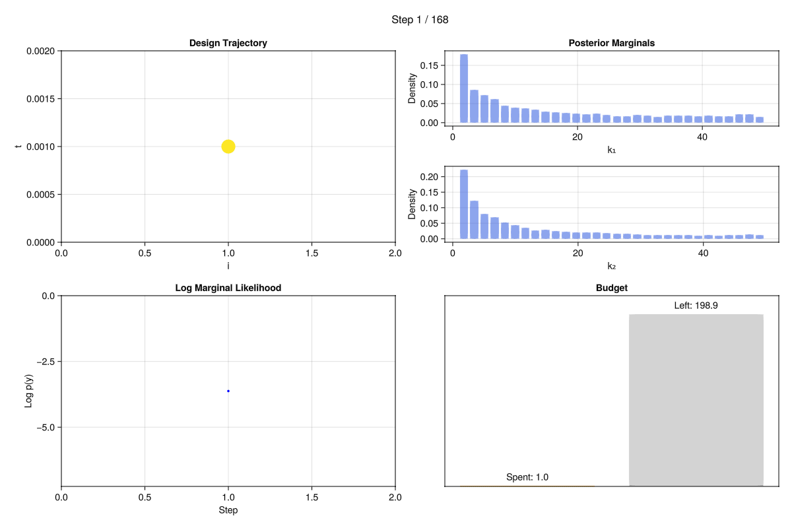
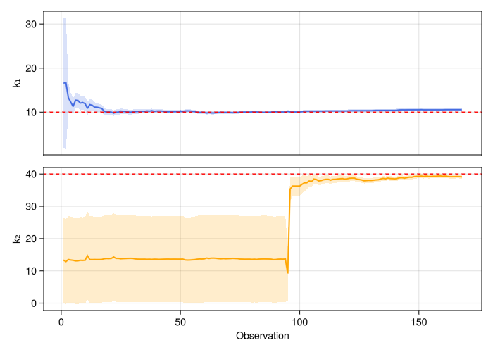
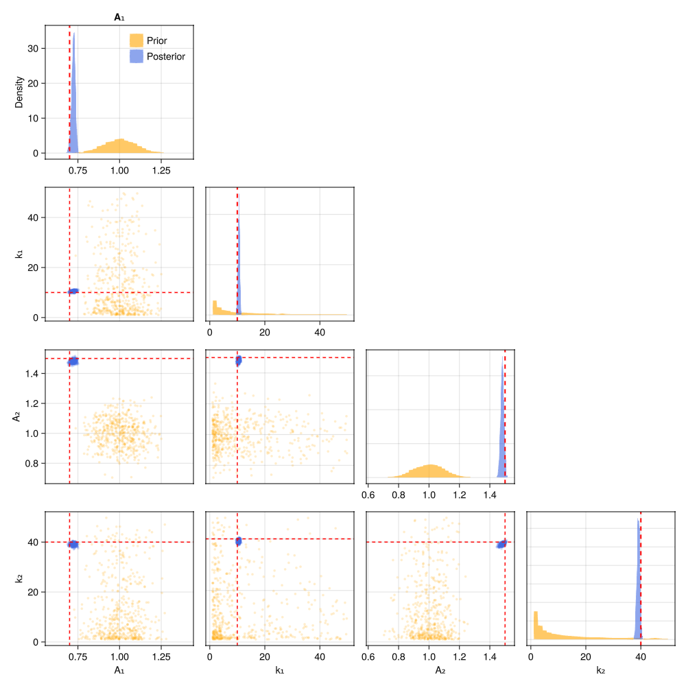
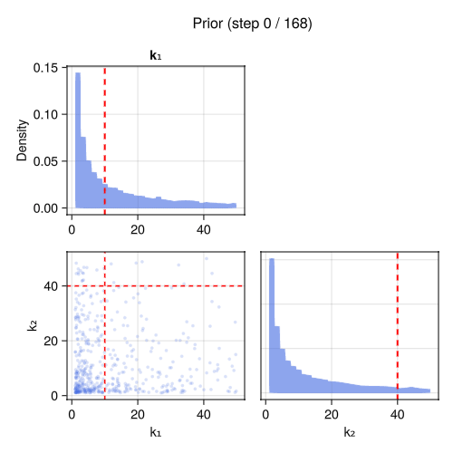

Switching Costs
In many experiments, changing measurement configuration is expensive — switching an instrument channel, moving a sample, or recalibrating. OptimalDesign.jl models this with a switching cost: a fixed penalty incurred whenever a discrete design variable changes value between consecutive measurements.
The model
Two exponential decays, selectively measured via a discrete control variable $i \in \{1, 2\}$:
\[y = A_i \exp(-k_i \, t) + \varepsilon\]
Each measurement observes one decay (chosen by $i$). Switching between decays costs 20 budget units.
using OptimalDesign
using CairoMakie
using ComponentArrays
using Distributions
function model(θ, x)
if x.i == 1
θ.A₁ * exp(-θ.k₁ * x.t)
else
θ.A₂ * exp(-θ.k₂ * x.t)
end
end
θ_true = ComponentArray(A₁ = 0.7, k₁ = 10.0, A₂ = 1.5, k₂ = 40.0)
σ = 0.05
acquire(x) = model(θ_true, x) + σ * randn()Defining the design problem
The switching_cost = (:i, 20.0) tells the algorithm that changing the value of x.i between consecutive measurements costs 20, on top of the per-measurement cost. The candidates span both channels and a range of times:
prob = DesignProblem(
model,
parameters = (
A₁ = Normal(1, 0.1), k₁ = LogUniform(1, 50),
A₂ = Normal(1, 0.1), k₂ = LogUniform(1, 50)),
transformation = select(:k₁, :k₂),
sigma = Returns(σ),
cost = x -> x.t + 1,
switching_cost = (:i, 20.0),
)
candidates = candidate_grid(i = [1, 2], t = range(0.001, 0.5, length = 200))┌ Warning: Problems with switching costs are experimental and may not be fully supported.
└ @ OptimalDesign ~/work/OptimalDesign.jl/OptimalDesign.jl/src/problem.jl:51Running the adaptive experiment
With n_per_step > 1, the algorithm uses a receding-horizon strategy:
- Plan: compute an optimal batch design for the entire remaining budget using the exchange algorithm, accounting for accumulated information from prior observations
- Sequence: reorder the design to minimise switching costs (via TSP over the support points)
- Execute: take the first
n_per_stepmeasurements, apportioned proportionally within each group to preserve time-point diversity - Update: update the posterior with the new observations, then repeat from step 1
This amortises the switching cost — the algorithm allocates a block of measurements on one channel before switching, rather than reconsidering the channel at every single step. We also use a larger number of particles for the prior/posterior reflecting the increased number of parameters:
prior = Particles(prob, 10000)
result = run_adaptive(
prob, candidates, prior, acquire;
budget = 200.0,
n_per_step = 10,
)[ Info: Adaptive experiment: budget=200.0, 400 candidates, 4 parameters (A₁, k₁, A₂, k₂)
[ Info: Running exchange algorithm for batch design...
[ Info: Exchange: K=400 candidates, q=2.0, 50 fixed particles, max_iter=100
[ Info: Init: 20 support points
[ Info: Phase 2: refining weights on 13 support points
[ Info: Exchange complete: 28 support points, fw_gap=0.0455
[ Info: Step 10/177: spent=11.31/200.0, ESS=7221.0, posterior=(A₁=0.735, k₁=11.946, A₂=0.988, k₂=13.289)
[ Info: Running exchange algorithm for batch design...
[ Info: Exchange: K=400 candidates, q=2.0, 50 fixed particles, max_iter=100, 10 prior obs
[ Info: Init: 20 support points
[ Info: Phase 2: refining weights on 11 support points
[ Info: Exchange complete: 20 support points, fw_gap=0.0105
[ Info: Step 20/181: spent=22.14/200.0, ESS=5795.0, posterior=(A₁=0.718, k₁=10.049, A₂=0.986, k₂=13.788)
[ Info: Running exchange algorithm for batch design...
[ Info: Exchange: K=400 candidates, q=2.0, 50 fixed particles, max_iter=100, 20 prior obs
[ Info: Init: 20 support points
[ Info: Phase 2: refining weights on 8 support points
[ Info: Exchange complete: 14 support points, fw_gap=0.0274
[ Info: Step 30/182: spent=32.95/200.0, ESS=8603.0, posterior=(A₁=0.714, k₁=10.067, A₂=0.984, k₂=13.835)
[ Info: Running exchange algorithm for batch design...
[ Info: Exchange: K=400 candidates, q=2.0, 50 fixed particles, max_iter=100, 30 prior obs
[ Info: Init: 20 support points
[ Info: Phase 2: refining weights on 10 support points
[ Info: Exchange complete: 13 support points, fw_gap=0.0076
[ Info: Step 40/182: spent=43.9/200.0, ESS=6105.0, posterior=(A₁=0.72, k₁=10.244, A₂=0.985, k₂=13.59)
[ Info: Running exchange algorithm for batch design...
[ Info: Exchange: K=400 candidates, q=2.0, 50 fixed particles, max_iter=100, 40 prior obs
[ Info: Init: 20 support points
[ Info: Phase 2: refining weights on 13 support points
[ Info: Exchange complete: 22 support points, fw_gap=0.0086
[ Info: Step 50/182: spent=54.85/200.0, ESS=5435.0, posterior=(A₁=0.72, k₁=10.159, A₂=0.984, k₂=13.616)
[ Info: Running exchange algorithm for batch design...
[ Info: Exchange: K=400 candidates, q=2.0, 50 fixed particles, max_iter=100, 50 prior obs
[ Info: Init: 20 support points
[ Info: Phase 2: refining weights on 11 support points
[ Info: Exchange complete: 17 support points, fw_gap=0.0182
[ Info: Step 60/183: spent=65.65/200.0, ESS=8874.0, posterior=(A₁=0.728, k₁=9.919, A₂=0.985, k₂=13.712)
[ Info: Running exchange algorithm for batch design...
[ Info: Exchange: K=400 candidates, q=2.0, 50 fixed particles, max_iter=100, 60 prior obs
[ Info: Init: 20 support points
[ Info: Phase 2: refining weights on 12 support points
[ Info: Exchange complete: 16 support points, fw_gap=0.0198
[ Info: Step 70/183: spent=76.52/200.0, ESS=7106.0, posterior=(A₁=0.72, k₁=9.922, A₂=0.984, k₂=13.759)
[ Info: Running exchange algorithm for batch design...
[ Info: Exchange: K=400 candidates, q=2.0, 50 fixed particles, max_iter=100, 70 prior obs
[ Info: Init: 20 support points
[ Info: Phase 2: refining weights on 8 support points
[ Info: Exchange complete: 11 support points, fw_gap=0.0048
[ Info: Step 80/183: spent=87.5/200.0, ESS=8183.0, posterior=(A₁=0.717, k₁=10.058, A₂=0.984, k₂=13.549)
[ Info: Running exchange algorithm for batch design...
[ Info: Exchange: K=400 candidates, q=2.0, 50 fixed particles, max_iter=100, 80 prior obs
[ Info: Init: 20 support points
[ Info: Phase 2: refining weights on 12 support points
[ Info: Exchange complete: 16 support points, fw_gap=0.0076
[ Info: Step 90/183: spent=98.47/200.0, ESS=7558.0, posterior=(A₁=0.718, k₁=10.086, A₂=0.984, k₂=13.505)
[ Info: Running exchange algorithm for batch design...
[ Info: Exchange: K=400 candidates, q=2.0, 50 fixed particles, max_iter=100, 90 prior obs
[ Info: Init: 20 support points
[ Info: Phase 2: refining weights on 9 support points
[ Info: Exchange complete: 14 support points, fw_gap=0.0287
[ Info: Step 100/154: spent=130.05/200.0, ESS=6226.0, posterior=(A₁=0.715, k₁=10.046, A₂=1.324, k₂=36.279)
[ Info: Running exchange algorithm for batch design...
[ Info: Exchange: K=400 candidates, q=2.0, 50 fixed particles, max_iter=100, 100 prior obs
[ Info: Init: 20 support points
[ Info: Phase 2: refining weights on 2 support points
[ Info: Phase 2 converged at iter 3 (fw_gap=0.00086)
[ Info: Exchange complete: 2 support points, fw_gap=0.0009
[ Info: Step 110/157: spent=140.35/200.0, ESS=7318.0, posterior=(A₁=0.718, k₁=10.225, A₂=1.432, k₂=38.223)
[ Info: Running exchange algorithm for batch design...
[ Info: Exchange: K=400 candidates, q=2.0, 50 fixed particles, max_iter=100, 110 prior obs
[ Info: Init: 20 support points
[ Info: Phase 2: refining weights on 2 support points
[ Info: Phase 2 converged at iter 1 (fw_gap=0.00076)
[ Info: Exchange complete: 2 support points, fw_gap=0.0008
[ Info: Step 120/159: spent=150.62/200.0, ESS=9957.0, posterior=(A₁=0.719, k₁=10.26, A₂=1.441, k₂=38.533)
[ Info: Running exchange algorithm for batch design...
[ Info: Exchange: K=400 candidates, q=2.0, 50 fixed particles, max_iter=100, 120 prior obs
[ Info: Init: 20 support points
[ Info: Phase 1 converged at iter 47 (fw_gap=0.00046)
[ Info: Phase 2: refining weights on 2 support points
[ Info: Phase 2 converged at iter 1 (fw_gap=0.00046)
[ Info: Exchange complete: 2 support points, fw_gap=0.0005
[ Info: Step 130/162: spent=160.89/200.0, ESS=9561.0, posterior=(A₁=0.721, k₁=10.33, A₂=1.452, k₂=37.992)
[ Info: Running exchange algorithm for batch design...
[ Info: Exchange: K=400 candidates, q=2.0, 50 fixed particles, max_iter=100, 130 prior obs
[ Info: Init: 20 support points
[ Info: Phase 1 converged at iter 26 (fw_gap=0.00032)
[ Info: Phase 2: refining weights on 2 support points
[ Info: Phase 2 converged at iter 1 (fw_gap=0.00032)
[ Info: Exchange complete: 2 support points, fw_gap=0.0003
[ Info: Step 140/164: spent=171.16/200.0, ESS=6361.0, posterior=(A₁=0.721, k₁=10.4, A₂=1.462, k₂=38.502)
[ Info: Running exchange algorithm for batch design...
[ Info: Exchange: K=400 candidates, q=2.0, 50 fixed particles, max_iter=100, 140 prior obs
[ Info: Init: 20 support points
[ Info: Phase 1 converged at iter 23 (fw_gap=0.00086)
[ Info: Phase 2: refining weights on 2 support points
[ Info: Phase 2 converged at iter 1 (fw_gap=0.00086)
[ Info: Exchange complete: 2 support points, fw_gap=0.0009
[ Info: Step 150/165: spent=181.4/200.0, ESS=6643.0, posterior=(A₁=0.722, k₁=10.537, A₂=1.48, k₂=39.282)
[ Info: Running exchange algorithm for batch design...
[ Info: Exchange: K=400 candidates, q=2.0, 50 fixed particles, max_iter=100, 150 prior obs
[ Info: Init: 20 support points
[ Info: Phase 1 converged at iter 24 (fw_gap=0.00011)
[ Info: Phase 2: refining weights on 2 support points
[ Info: Phase 2 converged at iter 1 (fw_gap=0.00011)
[ Info: Exchange complete: 2 support points, fw_gap=0.0001
[ Info: Step 160/167: spent=191.67/200.0, ESS=6311.0, posterior=(A₁=0.722, k₁=10.529, A₂=1.479, k₂=39.294)
[ Info: Running exchange algorithm for batch design...
[ Info: Exchange: K=400 candidates, q=2.0, 50 fixed particles, max_iter=100, 160 prior obs
[ Info: Init: 20 support points
[ Info: Phase 1 converged at iter 26 (fw_gap=0.0006)
[ Info: Phase 2: refining weights on 2 support points
[ Info: Phase 2 converged at iter 1 (fw_gap=0.0006)
[ Info: Exchange complete: 2 support points, fw_gap=0.0006
[ Info: Running exchange algorithm for batch design...
[ Info: Exchange: K=400 candidates, q=2.0, 50 fixed particles, max_iter=100, 168 prior obs
[ Info: Init: 20 support points
[ Info: Phase 1 converged at iter 36 (fw_gap=0.00065)
[ Info: Phase 2: refining weights on 5 support points
[ Info: Phase 2 converged at iter 1 (fw_gap=0.00058)
[ Info: Exchange complete: 5 support points, fw_gap=0.0006
[ Info: Experiment complete: 168 observations, cost=199.9/200.0, ESS=7708.0
[ Info: Final posterior: A₁=0.723, k₁=10.557, A₂=1.482, k₂=39.129
[ Info: Recording dashboard animation: 168 frames → switching_dashboard.gif (30 fps)
[ Info: Dashboard animation saved: switching_dashboard.gifA live dashboard is displayed of the acquisition process and evolution of parameter estimates:

Convergence
The convergence plot shows both rates being learned simultaneously, with uncertainty decreasing as data accumulates:
plot_convergence(result; truth = θ_true, params = [:k₁, :k₂])
Corner plot
plot_corner(result; truth = θ_true)
Posterior evolution
record_corner_animation(result.log, "switching_posterior.gif";
params = [:k₁, :k₂],
truth = θ_true, framerate = 3)[ Info: Recording corner animation: 25 frames → switching_posterior.gif
[ Info: Animation saved: switching_posterior.gif